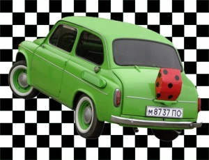

Календарь событий
Апрель
| 01.04 - |
День смеха. День геолога. |
| 07.04 - | Всемирный День здоровья. |
| 12.04 - |
Всемирный День авиации и космонавтики. День работников ракетно-космической отрасли Украины. |
| 21.04 - | День окружающей среды. |
| 26.04 - | День города Комсомольск. |
Май
| 01.05 - |
Международный день солидарности трудящихся. День города Ивано-Франковск. |
| 02.05 - | Международный день солидарности трудящихся. |
| 07.05 - | День Радио. |
| 08.05 - | День города Львов. |
| 09.05 - | День Победы. |
| 12.05 - | Всемирный день медсестер. |
| 13.05 - | День матери. |
| 15.05 - |
Международный день семьи. День города Каменец-Подольский. День города Кривой Рог. |
| 19.05 - | День науки. |
| 20.05 - | День банковских работников Украины. |
| 26.05 - | День работников издательств, полиграфии и книгораспространения. |
| 27.05 - | День работников химической отрасли. |
| 28.05 - |
День выпускника. День пограничника. |
| 29.05 - |
День города Северодонецк. День города Мукачево. День города Киев. |
| 30.05 - | День города Александрия. |
Июнь
| 01.06 - | Международный день защиты детей. |
| 05.06 - |
Всемирный день охраны окружающей среды. День города Светловодск. |
| 06.06 - |
День журналистики. День города Симферополь. |
| 10.06 - | День работников легкой промышленности. |
| 12.06 - | День города Севастополь. |
| 20.06 - |
День медицинского работника. День санитарно-эпидемологической службы. |
| 24.06 - | День молодежи. |
| 25.06 - | День таможенной службы Украины. |
| 27.06 - | День города Белгород-Днестровский. |
| 28.06 - | День Конституции. |

Июль
| 01.07 - |
День архитектуры Украины. День работников морского и речного флота. День работников кооперации. |
| 04.07 - | День войск противовоздушной обороны Украины. |
| 06.07 - | День города Ковель. |
| 08.07 - | День рыбалки. |
| 15.07 - | День работников металлургической отрасли. |
| 16.07 - | День бухгалтера. |
| 25.07 - | День города Феодосия. |
| 29.07 - | День работников торговли и общественного питания. |
Август
| 01.08 - | День Военно-Морских сил Украины. |
| 02.08 - | День воздушно-десантных (аэромобильных) войск. |
| 05.08 - | День железнодорожника. |
| 12.08 - | День работников строительной отрасли. |
| 14.08 - | День города Ялта. |
| 16.08 - | День города Евпатория. |
| 19.08 - | День пчеловодства. |
| 23.08 - | День города Луцк. |
| 24.08 - |
День Независимости. День города Новоград. |
| 25.08 - |
День авиации. День города Тернополь. |
| 26.08 - | День шахтера. |
| 29.08 - |
День города Ровно. День города Макеевка. День города Горловка. День города Донецк. |
Сентябрь
| 01.09 - | День знаний. |
| 02.09 - |
День предпринимателя. День города Сумы. День города Одесса. |
| 04.09 - |
День города Белая Церковь. День города Енакиево. |
| 06.09 - | День города Конотоп. |
| 08.09 - |
День физической культуры и спорта. День украинского кино. |
| 09.09 - |
День работников нефтяной, газовой и нефтеперерабатывающей промышленности. День танкиста. |
| 10.09 - | День города Мариуполь. |
| 11.09 - |
День города Керчь. День города Житомир. День города Николаев. День города Луганск. День города Алчевск. |
| 12.09 - |
День города Смела. День города Днепропетровск. |
| 15.09 - |
День фармацевта. День изобретателя и рационализатора. День города Нежин. |
| 16.09 - |
День работников леса. День города Ромны. |
| 17.09 - | День города Бердянск. |
| 18.09 - |
День города Лубны. День города Миргород. День города Винница. День города Кировоград. День города Херсон. День города Павлоград. |
| 19.09 - |
День города Черкассы. День города Фастов. |
| 21.09 - |
День города Чернигов. День города Дрогобыч. |
| 23.09 - |
День города Полтава. День города Борисполь. |
| 25.09 - | День города Мелитополь. |
| 26.09 - |
День города Бердичев. День города Краматорск. День города Новая Каховка. |
| 27.09 - | Всемирный день туризма. |
| 29.09 - | День города Хмельницкий. |
| 29.09 - | День города Кременчуг. |
| 30.09 - |
Всеукраинский день библиотек. День работников машиностроительной отрасли. |
Октябрь
| 02.10 - | День города Черновцы. |
| 02.10 - | День города Измаил. |
| 02.10 - | День города Умань. |
| 02.10 - | День города Червоноград. |
| 02.10 - | День города Запорожье. |
| 03.10 - | День города Ужгород. |
| 01.10 - |
Международный день музыки. Международный день людей преклонного возраста. |
| 02.10 - |
День города Черновцы. День города Умань. День города Запорожье. |
| 03.10 - | День города Ужгород. |
| 07.10 - | День работников образования. |
| 08.10 - | День юридического работника. |
| 14.10 - |
День художника. День работников стандартизации и метрологии. |
| 21.10 - | День работников пищевой промышленности. |
| 27.10 - | День спасателя. |
| 28.10 - | День работника автомобильной отрасли. |
| 30.10 - | День работников Государственной налоговой администрации. |
Ноябрь
| 03.11 - | День ракетных сил и артиллерии. |
| 04.11 - |
День национальной гвардии Украины. День пограничника. День работника социальной сферы. |
| 09.11 - | День украинской письменности и языка. |
| 16.11 - | День работников радио, телевидения и связи. |
| 17.11 - | День студентов. |
| 18.11 - | День работников сельского хозяйства. |